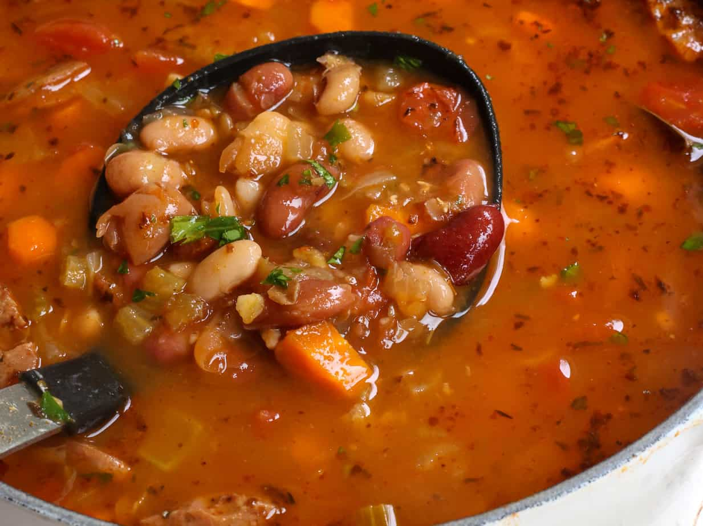

Soup!
Soups can be anything someone has available to scrounge up, reiterated into a heartwarming meal.
Ingredients
- Beans of your choice
- Rice, or any alternative grains
- A choice of root vegetable
- Broccoli or Cauliflower
- Turmeric
- Salt
- Pepper
- Onion
- Creativity
Steps:
- Soak 1 1/2 cups of choice of beans overnight, then rinse throughly
- Add 2 - 3 litres of water to a large pot, then add beans, along with 1 cup of choice of grains
- Bring pot to a boil before adding 1 cup of root vegetable and 1 whole onion
- *This is where creativity becomes an ingredient*
- Add 1 tablespoon of salt
- Add 1 - 2 tablespoons of turmeric
- Add pepper to taste
- Soup is finished when beans and root vegetables are soft